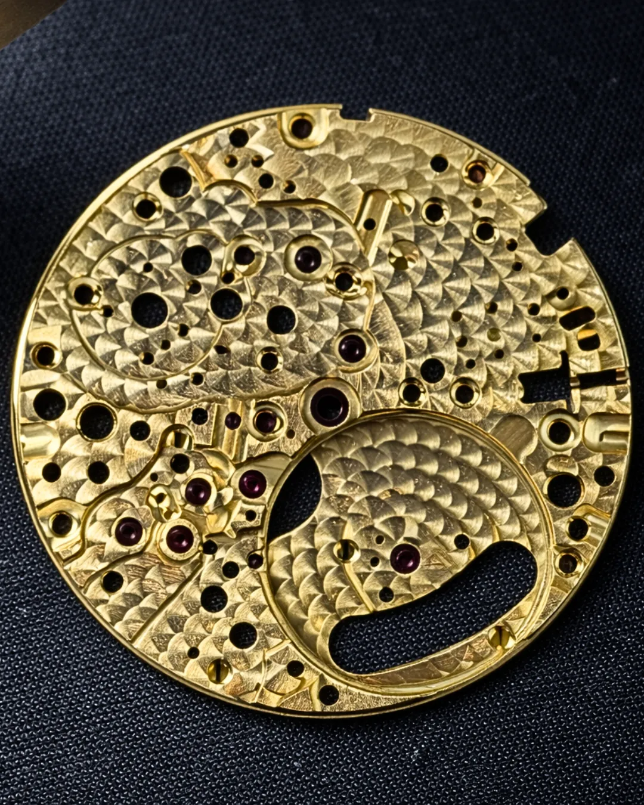
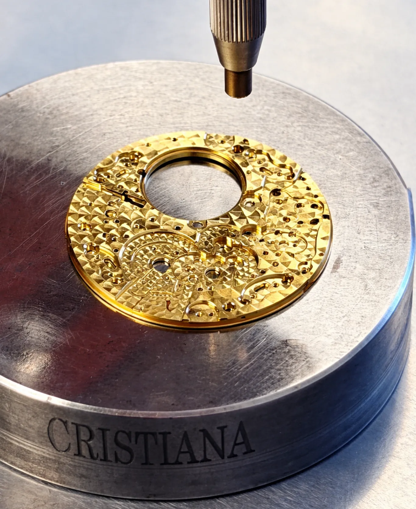
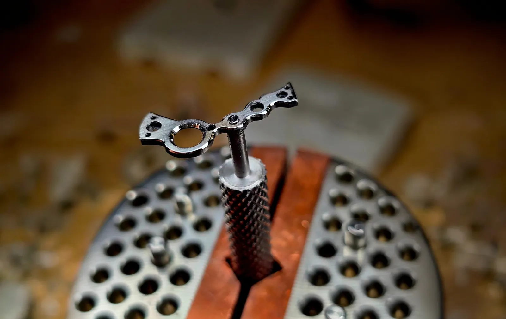
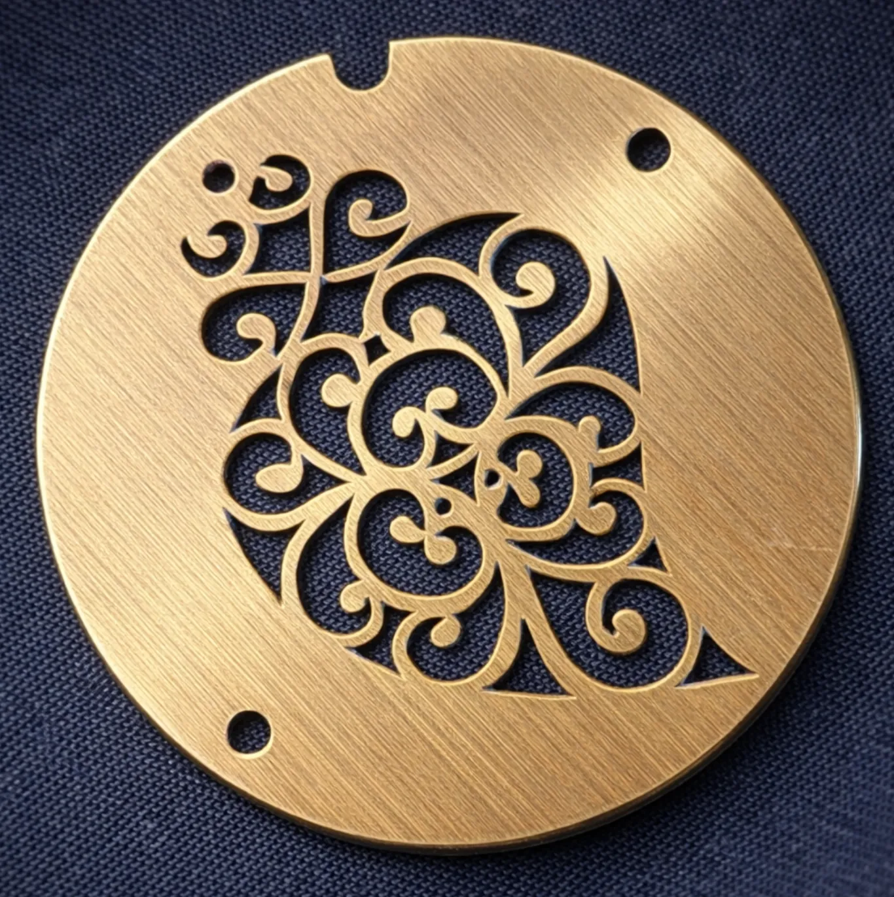
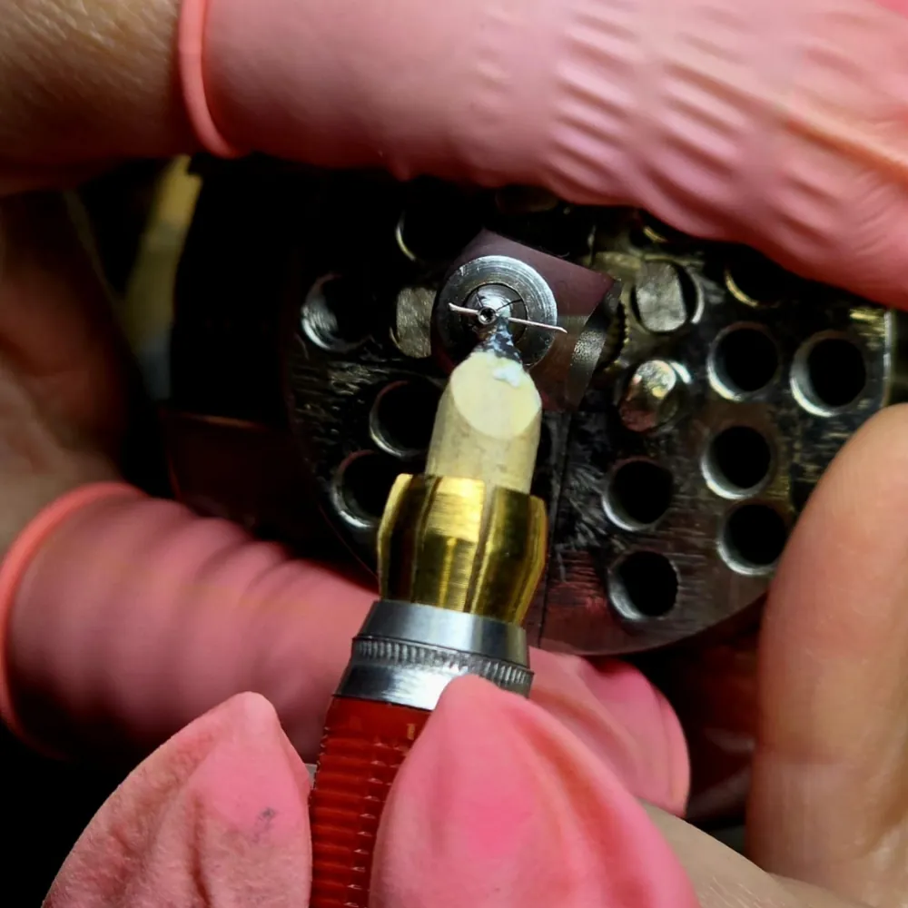
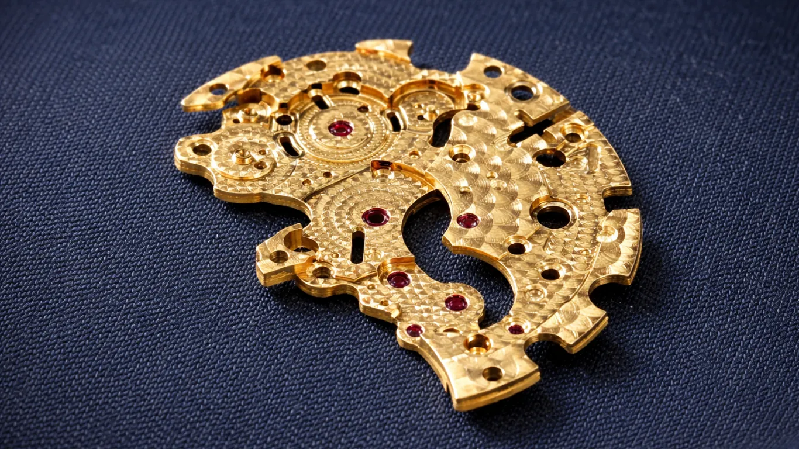
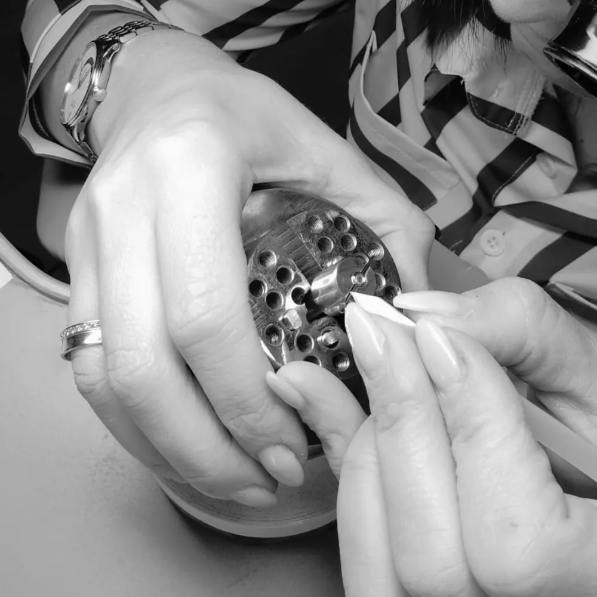
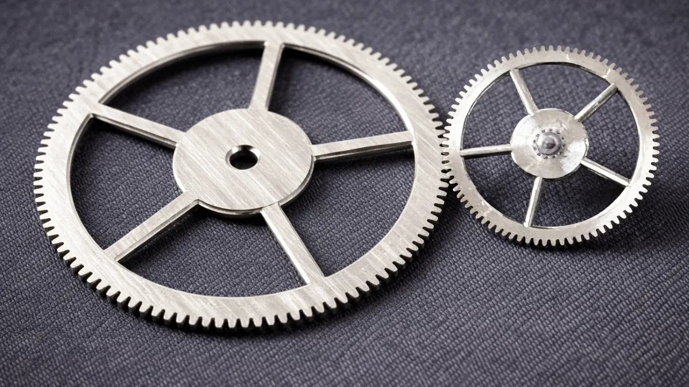
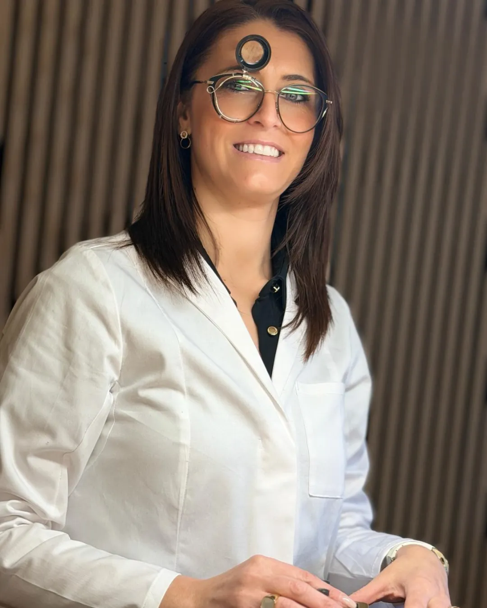

Décoration horlogère · Le Brassus
Cristiana
Lopes
Angleuse et perleuse d'exception, au service de l'art du détail, de la précision et de l'excellence haut de gamme.
Faire de la finition un art à part entière.
Cristiana Lopes, fondatrice de DecoBrassus

Savoir-faire
Révéler la beauté de chaque composant
Les finitions horlogères d'exception soulignent l'architecture du mouvement et lui donnent sa personnalité propre, son caractère et toute sa profondeur.
- Anglage main à la lime
- Anglage plat et bercé
- Coins rentrants
- Anglage au micromoteur
- Perlage manuel
- Étirage des flancs au cabron ou pointe diamant
- Satinage
- Moulurage
- Cerclage
- Poli bloqué, poli noir
Matériaux : maillechort, titane, acier, inox, laiton, aluminium, acier damassé, or jaune, gris ou rose.
Atelier
Le relief, jusque dans les arêtes
Surfaces, arêtes et volumes, travaillés à la main, pièce après pièce.







Portrait
La précision du geste
Spécialisée dans l'anglage manuel et les perlages décoratifs, Cristiana Lopes sublime chaque composante avec une attention absolue portée aux moindres détails.
Fondatrice de DecoBrassus, elle met son expertise au service de maisons, d'ateliers et de projets d'exception, attachée aux grands savoir-faire de la tradition horlogère.
Rigueur, sensibilité et passion.
Contact
Un projet à sublimer ?
Une création d'exception, un composant à magnifier, en pièce unique ou en petite série : parlons de votre projet.
- decobrassus@hotmail.com
- Téléphone
- +41 79 890 27 40
- Atelier
- Rue de la Gare 22
1348 Le Brassus VD
Chaque mandat et demande d'information est traité en toute confidentialité.